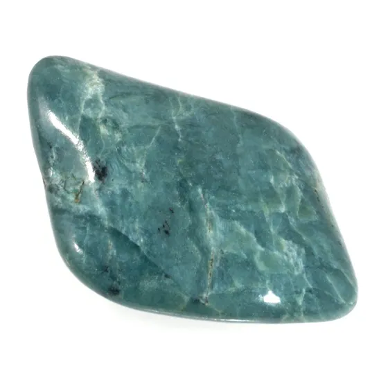

Mineral Grimoire
 Dianite
Dianite
Dianite is a monoclinic mineral and a rare variety of blue nephrite jade, composed of quartz, tremolite, and blue amphibole. This extraordinary gem hails exclusively from a remote region of Siberia, Russia, and has never been found anywhere else in the world. Named after the late Princess Diana for its resemblance to the striking blue of her eyes, Dianite was first discovered in 1997, the same year she passed away.
Appearance
Sky to dark blue opaque stone, may have cloud-like markings.
Origin
Siberia
Magickal Properties
Dianite carries a high vibration that activates your psychic abilities and helps you perceive beyond surface appearances. As a member of the Jade family, it shares jade's traditional associations with wealth, prosperity, and the infinite abundance of the universe. Known as the Cosmic Communion Stone, Dianite is uniquely suited to developing all of your psychic gifts and intuition simultaneously. It is especially recognized for activating clairaudience, allowing you to hear the voices of your angels and spirit guides.
This gem infuses deep peace into body, mind, and spirit, calming hyperactivity and allowing you to listen to the voice within. It relieves stress, dispels negative thoughts, and soothes the nervous system. Dianite encourages patience and discernment, helping you see situations from every angle, which earned it the name Circumspect Stone. Similar in energetic feel to Blue Violane from Italy, it has acquired a reputation as a profound healing stone for those who are troubled.
For more advanced work, Dianite facilitates insightful dreams and dream recall, supporting the release of suppressed emotions during dreamtime. It promotes mind and body integration, fostering a sense of embodied wholeness so you can remain present in your physical body even while engaging in esoteric pursuits. This gem encourages deep inner exploration to uncover your true life purpose and connects you with higher dimensions for communication with divine beings and access to spiritual wisdom. It enhances spiritual growth, strengthens your connection to the Higher Self, and may be helpful for those working through poor self-image and body dysmorphia.
Chakra Work
Dianite activates the Throat, Third Eye, and Crown chakras, creating a clear channel for communication with the higher realms. Meditating with this stone helps you connect with your spirit guides, strengthens spiritual awareness, and facilitates access to divine wisdom. Place it at the throat for clairaudient development, at the third eye for psychic vision, or at the crown for cosmic communion and Higher Self connection.
Partners Well With
Pair Dianite with Bloodstone for grounded spiritual protection, or with Blue Aventurine to amplify its calming, communicative energies. Celestite deepens its connection to angelic realms, while Rutilated Quartz adds clarity and amplification to psychic work. Smoky Quartz provides grounding balance during intense spiritual exploration. Sodalite enhances truth-seeking and intuitive insight, and Tree Agate offers stability and connection to nature's wisdom.
Healing
Dianite may assist with arthritis and inflammation of the joints. It is reputedly helpful for asthma and bronchial conditions and to Raynaud's disease.
Position
Grid, wear, hold or disperse gem essence around the aura. Dianite also brings warmth to the extremities and to the heart of those who hold it.
Magickal Message
Trust your intuition and the divine guidance you receive when you work with me. Walk in truth, transcend your doubts, and allow your highest self to lead the way.